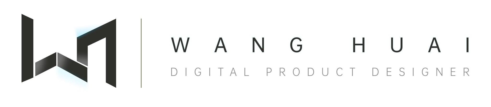

AI EXPLORATION


Main PortfolioAI EXPLORATION / DAILY PRACTICE / VISUAL NOTES
第二个视觉探索窗口，用来收藏平时练习、AI 图像实验、界面构成研究和还在生长中的创作片段。
ENTER THE ARCHIVECOLLECTION
AI EXPLORATION
ABOUT THE WINDOW
这里适合放置更自由、更即时的内容：每天的小练习、AI 风格试验、未完成的视觉方向、界面灵感和过程草稿。它不需要像主作品集那样完整复盘，更像一个带有审美秩序的创作现场。
页面气质会保持安静、克制和画册感，让内容显得被认真整理过；同时保留少量数字感，让 AI 探索不会变成单纯的生活方式展示。
 VISUAL
VISUALARCHIVE

VISUAL RETREAT
这个窗口可以承接平时的灵感碎片：一张 AI 图、一组海报练习、一次 UI 方向尝试，或者一个只完成到 60% 但仍然值得保留的视觉概念。